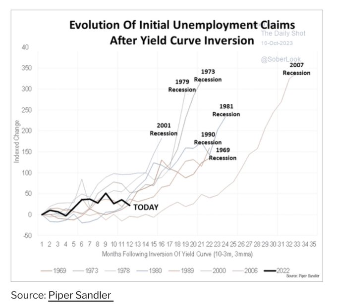

14 Public Debt
14.1 Yield Curve Inversion
Typical macro cycle turns are slow to start, but they all end in recession.
The current modest rise in unemployment is about median for a year in since YC inversion compared to post-war cycles. But it’s usually in this time frame where things start to get interesting:

14.2 Public Debt Management
Romerskirchen
Already before the outset of the global pandemic, public debt loomed at historically high levels in all but a few advanced economies. The pandemic-related surge in government financing needs has resulted in OECD governments issuing a record amount of debt. Questions around the sustainability of this growing debt burden have taken centre stage in accounts of public finance. What is largely absent in these debates is the question of how governments actually borrow. The budgetary constraints of debt are not merely a function of debt levels, but are influenced by the ways in which public debt is planned, issued and managed. In the UK, 2019/20 debt interest payments, while benefiting from low interest rates, amounted to £48 billion – more than defence spending. In spite of its economic and political importance, public debt management has received scant attention and continues to be clouded with technocratic obscurity. The arcane nature of public debt management has allowed consequential reforms in debt management agencies to largely fly under public and academic radars. This ESRC-funded study seeks to give a comprehensive account of this overlooked revolution.
Starting in the 1980s, debt management functions in rich economies have been handed over to newly created debt management offices, which now enjoy far-reaching policy independence in managing sovereign debt. Who are these agencies which manage over 50 trillion US-Dollars across OECD countries? How can we explain the transformation of public debt management, both regarding institutional arrangements and new managerial practices? And what are the consequences and challenges of this silent revolution?
This project on the operational arm of debt management seeks to throw light into an overlooked corner of public finances. ToPDeM will theorise and analyse the diffusion of new practices in sovereign debt management. In so doing, this research will combine evidence from statistical analyses of 24 advanced economies with an in-depth comparative case study of 3 countries demonstrating variation in institutional outcome (the UK, Germany, and Denmark).
14.3 Sovereign Debt after Covid
G30 Report
Sovereign Debt and Financing for Recovery after the COVID-19 Shock: Next Steps to Build a Better Architecture
This report acknowledges the world – and lower-income countries – have so far avoided large pandemic-driven debt defaults in part due to positive spillovers from extraordinary monetary and fiscal support in mature markets. However, the authors caution against complacency, warning that as the overall economic outlook brightens, the likelihood of tightening policy may result in outflows as well as further debt distress and ill effects in emerging and frontier market economies. Moreover, continued worries over the course of the pandemic, predominately vaccination rates and global access, must discourage early complacency or congratulatory posturing.
The report makes clear that collective aversion to crisis planning - ostensibly for fear of triggering a self-fulfilling prophesy of debt defaults - is irresponsible when much of the world is one unforeseen shock away from a lost decade. The report underscores that now is the time to rebuild and reform the architecture to improve its long-term resilience and effectiveness. The G30 report makes a series of important recommendations designed to buttress the sovereign debt restructuring process and mechanisms in the following areas: There should be a recycling of SDRs, creditors should reaffirm and elaborate the comparability of treatment principle, the G-20 should establish a standing consultative mechanism in conjunction with the Common Framework, national law in major financial markets should shield payment systems and intermediaries from disruptive debt collection, the G-20 should publicly disavow the use of contract terms that impair debtors or creditors participation in international debt negotiations, and commercial, official, and multilateral lenders should encourage sovereign borrowers to adopt robust domestic debt disclosure requirements as part of their debt authorization.
Slow progress on reforming debt architecture leaves the world unprepared to deal with persistent global public health and macroeconomic vulnerabilities in the coming years.
The ravages of the pandemic are now at the highest point in several important emerging markets, while higher inflation is resulting in policy tightening, endangering the economic recovery.
The possibility of debt servicing difficulties is substantial in the near term.
The mechanisms put in place so far are likely inadequate to the challenges ahead.
Continued failure to take the necessary steps to prepare for future shocks increases the risk that debt problems would not be resolved in an orderly way.
14.4 Treasury Bond Market
Tooze
The system as a whole looks highly unstable. The Treasury market, “is primed so that high-frequency traders and primary dealers pull back when there are problems”, said Yesha Yadav, a professor at Vanderbilt Law School in Nashville who studies Treasury market structure and regulation. “The way this is set up is designed to fail. It is exceptionally fragile,” Yadav said.
Yadav has just put out a Columbia Law Review article on Treasury market structure and its fragilities which I highly recommend. The picture she paints is alarming:
The asymmetric distribution of regulatory burdens between primary dealers on the one hand and high-speed securities firms on the other limits opportunities for private cooperation and mutually reinforces risk-taking behavior by both sets of players. Unwieldy public monitoring, combined with a light-touch rulebook, allows all firms to take risks or trade opportunistically with little chance of detection and discipline. Traders can also cheaply exit the market if something goes wrong, limiting how fully they must internalize the costs of their risky behavior. For the less-regulated, nonprimary dealer firms, the regulatory constraints are even weaker, further increasing their financial incentive to seek risk in Treasury markets. Faced with diminishing profits and a less lucrative franchise, primary dealers are also incentivized to take risks and shirk self-discipline. So, not only is the task of private oversight logistically harder as the number of traders proliferates and diversifies, but it is also problematic when self-policing would result in primary dealers imposing added costs on themselves in a period of fierce competition and lower profits. The consequences of this regulatory neglect in Treasury markets were apparent even prior to the March 2020 COVID-19 crisis, as a number of disruptions over the years pointed to unaddressed fragilities at the heart of this supposedly failure-proof market.
Regulators have discussed making changes to bolster Treasury market liquidity. There have been recommendations also from the G30.
But progress has been slow and the lack of a centralised Treasury market regulator can cause confusion.
Yadev’s first proposal for stabilization would be a binding Memorandum of Understanding between the regulators themselves to create a clearer division of labour between them.
Her second proposal takes up the suggestion from Darrel Duffie for a centralized Treasury clearing house model that would ensure that all major players had skin in the game in ensuring that the market continued to function even at moments of stress.
In the view of Bank of America analysts: “Treasury market size “has outgrown dealer ability to effectively intermediate risk.” This then requires an “official-sector role as dealer of last resort.””
Tooze (2021) Global bond market turmoil 2021 - an explainer
Tankus
The role of high frequency traders and hedge funds in 2020’s liquidity freeze has gotten a lot of attention. Much has especially been made of the increasing role of hedge funds. I haven’t historically focused on this topic because I’ve felt that it missed the more fundamental issues. The key is that before the international financial regulatory agreement Basel III, dealer balance sheets could expand to an unlimited extent in order to absorb “risk free” treasury securities. I wrote about this multiple times in 2020. Hedge funds, or high frequency traders, backing out of these markets during periods of instability didn’t seem to me to be particularly surprising. Nor did I think limiting the extent their balance sheets could expand to absorb treasuries would improve liquidity, even if it did make these institutions “safer”.
I don’t think any of those conclusions are wrong, but I’ve become convinced over the past six months that it is interesting in and of itself that these actors have stepped into the breach. Some have become referring to them as “shadow dealers”. A recent interesting paper on this comes from Columbia Law professor Lev Menand and New York Fed Senior Policy Advisor Josh Younger. They focus on the history and current state of the treasury market, with a special focus on repo financing of treasury holdings. Following a lot of the alternative monetary analysis of the last 15 years, they treat repo liabilities as a form of money. That means they come to the conclusion that the U.S. has never stopped “money financing” treasury holdings.
What changed after the Fed-Treasury Accord of 1951 was instead the type of money that financed their holdings and which institutions began holding them (and emitting money liabilities). In short, we went from central banks and banks purchasing and holding treasuries by issuing settlement balances or emitting bank deposits to dealers emitting repo liabilities. The paper, “Money and the Public Debt: Treasury Market Liquidity as a Legal Phenomenon”, is well worth a read (and not just because it positively cites me multiple times, including making the argument the paper makes in 2020).
In reading this paper I have become convinced that I have underrated the role of these high frequency trading desks and hedge funds. The core issue is one of monetary design, but these institutions reflect that lack of monetary design. Rather than being sideshows, their behavior in recent years reflects the opportunity to partially take the place left behind by more rigid balance sheets of dealers, who remained part of bank holding companies. At the same time, since “shadow” dealers are further outside the reach of the “regulatory perimeter”, they don’t have the same obligations as licensed dealers. They don’t have to regularly participate in treasury markets, and provision liquidity. Nor do they have access to the backstops that licensed government securities dealers have.
These HFT desks and hedge funds run from treasury markets at the first sign of trouble, and that’s precisely what they did after SVB failed.
Tankus (2023) I Was Wrong About Post-SVB Treasury Market Strains- Here’s Why
Menand and Younger Abstract
The market for U.S. government debt (Treasuries) forms the bedrock of the global financial system. The ability of investors to sell Treasuries quickly, cheaply, and at scale has led to an assumption, in many places enshrined in law, that Treasuries are nearly equivalent to cash. Yet in recent years Treasury market liquidity has evaporated on several occasions and, in 2020, the market’s near collapse led to the most aggressive central bank intervention in history. This Article pieces together what went wrong and offers a new account of the relationship between money issue and debt issue as mechanisms of public finance. It argues that a high degree of convertibility between Treasuries and cash generally requires intermediaries that can augment the money supply, absorbing sales by expanding their balance sheets on both sides. The historical depth of the Treasury market was in large part the result of a concerted effort by policymakers to nurture and support such balance sheet capacity at a collection of nonbank broker-dealers. In 2008, the ability of these intermediaries to augment the money supply became impaired as investors lost confidence in their money-like liabilities (known as repos). Subsequent changes to market structure pushed substantial Treasury dealing further beyond the bank regulatory perimeter, leaving public finance increasingly dependent on high-frequency traders and hedge funds— “shadow dealers.” The near money issued by these intermediaries proved highly unstable in 2020. Policy makers are now focused on reforming Treasury market structure so that Treasuries remain the world’s most liquid asset class. Successful reform likely requires a legal framework that, among other things, supports elastic intermediation capacity through balance sheets that can expand and contract as needed to meet market needs.
Menand and Younger Conclusion
From the start, the “breadth, depth, and resiliency” of Treasury markets has turned on monetary system design.449 In the 1950s, Fed officials, relying on purchase and sale transactions conducted under their §14 authority rather than on loans extended under §13(3) or §13(13), created a new market for financial instruments (repo) that looked quite similar to, and in several important ways were more attractive than, deposits and other money claims. By providing a liquidity backstop at an administered rate and (eventually) preferential treatment under the Bankruptcy Code, policy makers attracted a broad and diverse group of potential cash providers; regulation of its government securities dealers under an investor protection framework allowed for higher levels of leverage than would be allowed for depository institutions. The result was a curious tension: intermediating Treasury markets was important enough to garner significant public sponsorship and support, but its providers were not systemically important enough to be subject to the same level of prudential oversight as banks. The arrangement led the U.S. financial system down a path towards increased reliance on shadow banking. While many factors contributed to the GFC in 2008, it seems at least plausible that Martin’s Fed set in motion a series of events that contributed to what eventually transpired.
The 2010s offered a brief period during which dealer activity was consolidated inside the banking perimeter. That, however, did not ultimately last long in practice. New regulatory requirements that assigned a cost to leverage agnostic of risk once again pushed Treasury and repo intermediation in the direction of non-banks. The players were admittedly different—PTFs and other HFTs taking on one aspect of market making (trade matching), and RV hedge funds the other (inventory management)—they too relied on easy access to cheap and available repo funding for their activities. And once again, that system proved vulnerable to shocks.
The present moment presents yet another opportunity for reflection. It is also a critical phase in the financial history of the U.S. and the dollar. The trajectory of mandatory federal spending points to a secular widening of deficits over the medium- to long-term. Ensuring markets keep pace with that growth remains, as Chairman Martin observed back in 1959, “obviously needed for the functioning of our financial mechanism.”450 Absent reform, one possibility is another panic. That is certainly one way to interpret the second Treasury market functioning event of the post-Accord era: the 1958 funding squeeze, which bears some important similarities to recent events.
A number of reforms have been proposed to reduce the risk of that outcome. Most are aimed to some extent at giving banks a greater role in that market, but they vary in intent and effectiveness. An outstanding question for policy makers is more of a first principles approach: should Treasury intermediation occur inside, rather than outside, the banking perimeter? To the extent that its systemic importance is similar to that of the banking and monetary system more broadly, as recent events and policy responses suggest, locating intermediation within the banking system would appear preferable. It would, however, come with costs, particularly the extraordinary challenge of executing fundamental changes in the market structure and demand base for U.S. government debt. Although there are no easy answers, there is value in clearly articulating the principles and goals against which these costs and benefits will be measured and weighed.